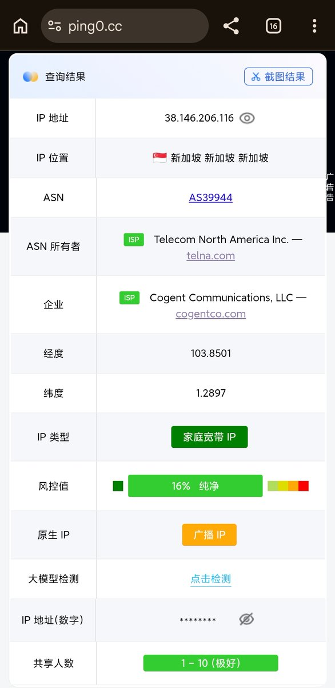
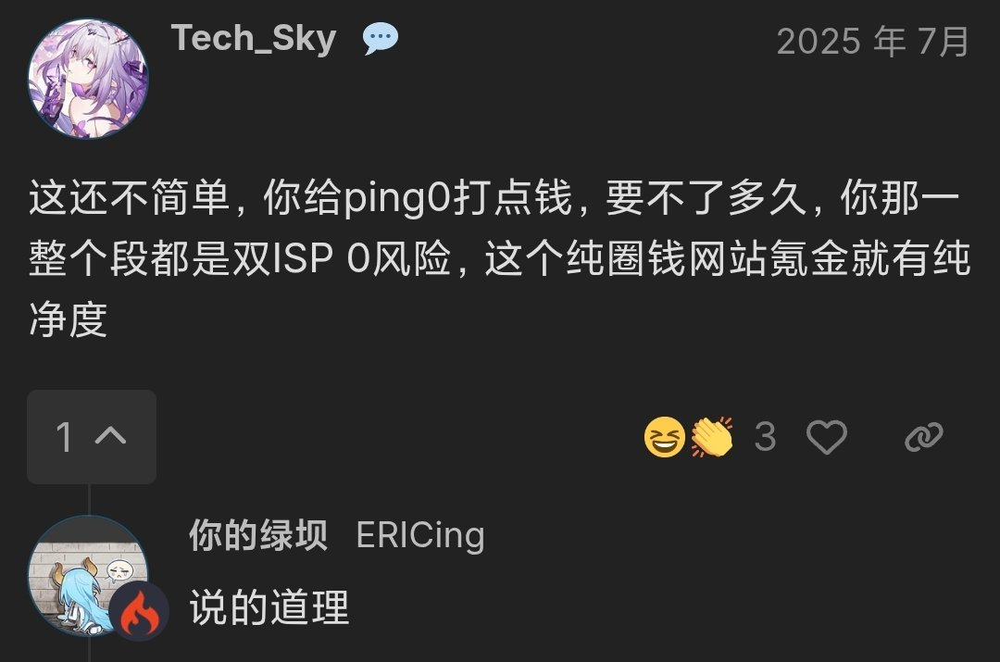

奶昔🥤
@realNyarime
最不信任的IP纯度站点就是https://t.co/ut4gznmupa了，他家曾有收钱改数据的事情，并且广告位价格在每月6-15k不等，大多都是某某proxy之类的
我对他家静默上报WebRTC获取的真实IP并不意外，毕竟需要通过访问来判定共享用户数的，这个方式也要webrtc辅助，当开着这个IP+WebRTC泄露 = 人数+1
但是这种基于“全网用户都会来访问ping0”的前提来做风控真的挺傻逼的，换言之，越测试风险越高，越描越黑。开车的人记得屏蔽ping0，这样ping0就会一直干净，也能避免小白车友天天来问你为啥ping0红了🤣🤣🤣

